# VIT（transformer 用于图片的良好案例）
将 transform 思想运用于视觉问题
# 核心
- 将图片切为 patch，对应 token
- 增加可学习的位置编码
- 头部增加 token，类似 cls，用于分类
# 关于结果
-
patch size 越小，序列越长，效果越好
-
数据集越大，效果越好
-
比 resnet 快！成本低节省算力
# 关于 embedding
- 用 1024 个卷积核为每个 patch 卷积
由于 cnn 操作本身就会带来归纳偏置，及：
- 局部性
- 平移不变性
所以 VIT 比 resnet 学的慢
# CLIP（图文匹配，首次将图文两个模态良好结合）
训练一个模型对任意类别预测，不用人工标注
使用 image encoder 和 text encoder，然后 分别经过一个线性投影层 ，对特征 L2 正则化，最后将两个向量对齐（计算 cos）
使用图文配对任务训练，使用一个类似交叉熵的 Loss
# 关于 image encoder
- 模型深度、宽度，图像分别率同时增加计算量更好，不要光增加一个维度
# 关于推理
- nlp 生成 label text
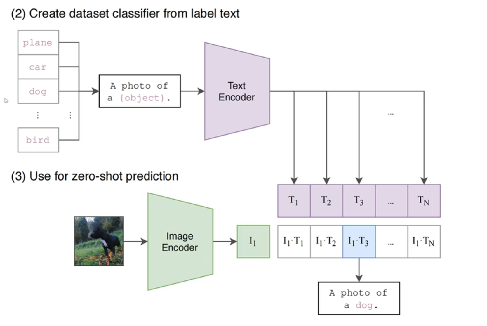
- prompt ensembling，多个 label 模板分别计算相似度，最后取平均
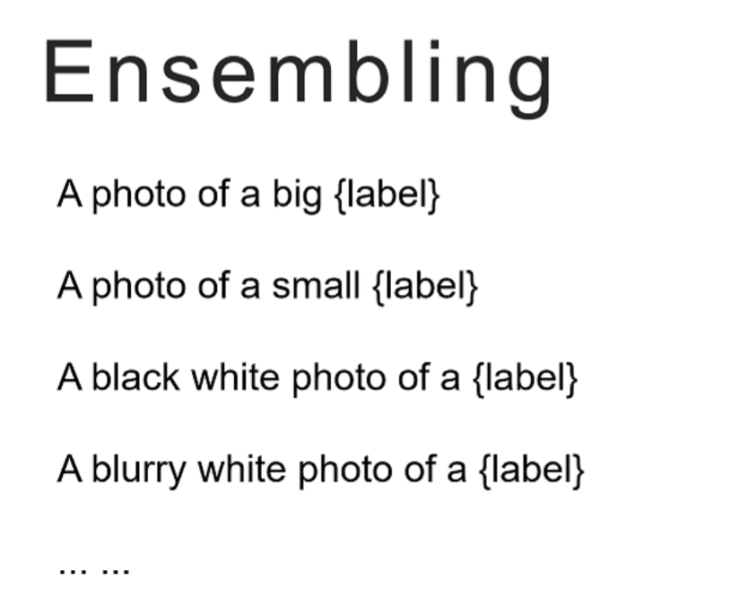
# MOCO（前置技能，对比学习 & 动量思想）
# 对比学习
为了使用无监督学习，对比学习是一种很有效的方式，尽量拉开特征的距离，模型就学到了知识
对比学习的核心思想：使用正例对、负例对学习样本的特征表示
因为构造方法简单，所以无监督，成本低
MOCO 的要点是
- batch 尽量大；防止不同 batch 把不同类别的 feature 放在同一特征空间位置
- 然而显存有限，batch 不可能无限大，那我们可以把过去的 feature 存下来，用于后续每一轮进行负例对学习，但是每轮参数更新后模型会改变，原先生成的 feature 也会改变、过时
综上，如果希望效果好，我需要
- 负例尽可能多
- 负例尽可能一致
于是我们引入动量模型
# 核心
-
使用 EMA 作为动量模型（教师模型），用来生成 key
-
损失函数为 InfoNCE
-
使用温度系数，温度高 softmax 后越平均；温度低 softmax 后越差异
# ALBEF（预训练、理解）
根据前人工作，我们总结了多模态理想框架的要求：
- 图像、文本应该分别先编码
- 图像编码器的参数量应该比文本大，因为 token 附带更多语义
- 融合编码器不能太简单
# 核心
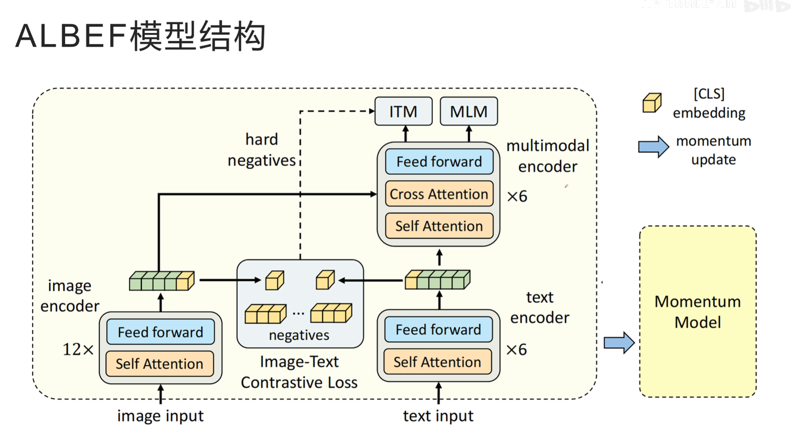
- 对于 encoder 获取的特征，先使用 clip 思想对齐；具体做法时，两个 encoder 工作前都会为数据序列开头加一个
[cls]，以表示全局特征 - 使用 moco 思想，用动量模型生成负例，进行对比学习（特征对齐损失 ITC）
- 用难负例（相似度最高的负例对）进行
图片文本比配任务（ITM） - 引入
带掩码的语言模型任务（MLM）
# 动量蒸馏
有时训练数据的 label 不一定最合适，所以不光考虑采集数据中的 label，更考虑动量模型的结果，即把动量模型看作教师模型
即对 ITC 和 MLM 引入 KL 散度计算 Loss
# BLIP（初步多模态生成）
- 又检索（encoder）又生成
- 解决图文对数据的质量问题（噪声）
# 核心
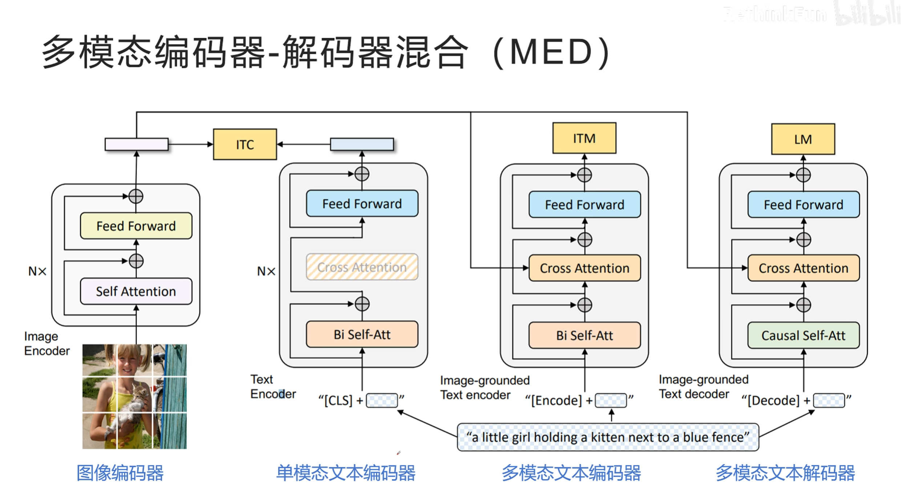
- label smoothing，答案是土豆，但是也可以是马铃薯，可以是洋芋；用 探索，让答案不那么唯一
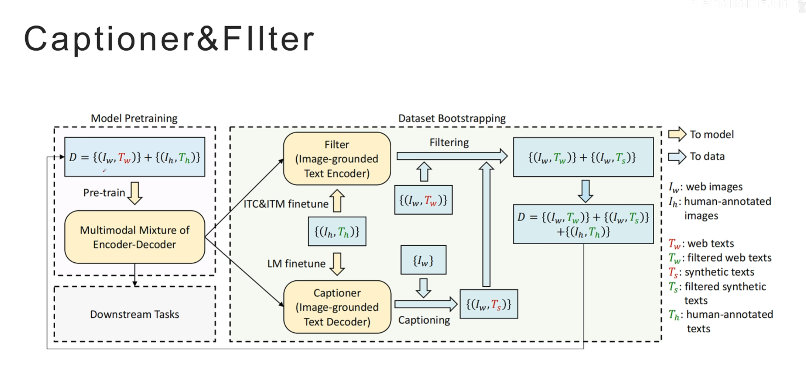
- captioner 生成、filter 判断，两个模型对抗，用更好的数据结果重新训练一遍
- h 是人工标注的好数据，w 是网络中的有噪音数据
# Flamingo（图文混排、利用预训练好的模型）
few-shot 模型
利用已有视觉模型与大语言模型
# 核心
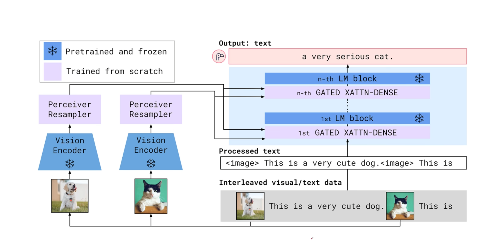
- 通过 perceiver resampler，将视觉 encoder 的结果作为 kv 喂给 cross attention，最后输出长度为 64 的视觉 token
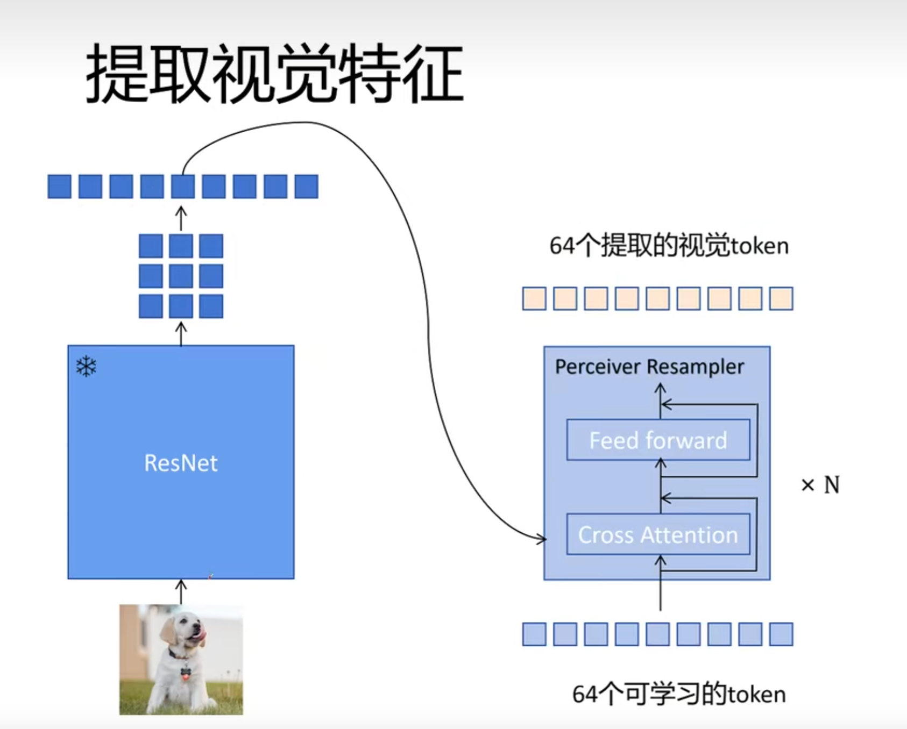
注意：此处的 cross attention：
# x: 可学习的隐变量 (Latents)，形状为 [R, d]，作为 Query# x_f: 注入了时间编码并展平的视觉特征，形状为 [T*S, d]一步到位（融合 Self-Attention 与 Cross-Attention）
- 用 tanh gating 的 decoder 逐渐从 0 给文本生成器注入视觉信息
- Loss 就是预测 token 的交叉熵函数
Flamingo 答完题之后，怎么判断它答得好不好？要看题目是哪种类型：
第一种：开放题（让它自由作答）
比如给张图问 "图里在干嘛？"，它得自己组织语言说一句话。这种就像问答题 / 作文题，没法只看对错，得有个评分标准去打分。第二种：选择题（答案就那几个选项）
比如答案只能从 A/B/C/D 里选。这种情况下 Flamingo 不自己写答案，而是把每个选项都试一遍，看自己对哪个选项 "最有把握"，就选那个。那 "最有把握" 怎么衡量？模型内部对任何一句话都能算出一个 "这句话有多顺、多像该出现的话" 的分数（其实就是它训练时一直在算的那个概率）。哪个选项分数高，就选哪个。这就是所谓的 "评分函数"—— 其实就是模型自己的 "觉得顺不顺" 的概率。
一句话：选择题用模型自己的 "信心分" 挑答案；问答题用外部的评分标准给作文打分。
# BLIP2（利用已有预训练模型，先对齐再生成）
# 对齐阶段（ITC+ITM+ITG）
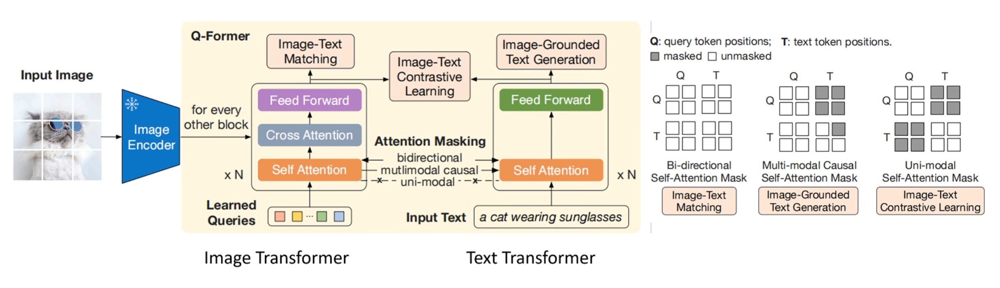
-
融合编码器直接用 bert，cross attention 随机初始化
-
因为参数量小，batch 大，就不用动量模型了
-
图像编码器使用 VIT，但是删了一层 transformer
-
第一阶段的 ITG（Image-Text Generation）目的在于 “逼迫” Q-Former 提取有用的视觉特征，而不是为了得到一个强大的文本生成器。
# 生成阶段
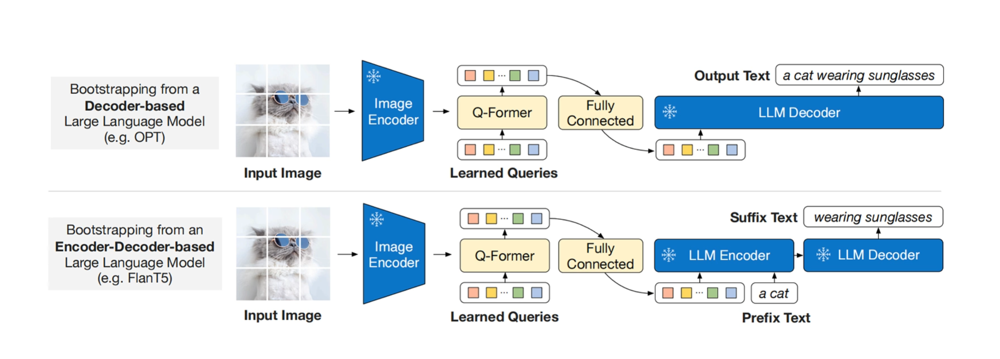
# LLaVA（强 SFT 数据 + 简单结构 = 奇迹）
# LLaVA 1
- 用 GPT4 构建 SFT 数据：
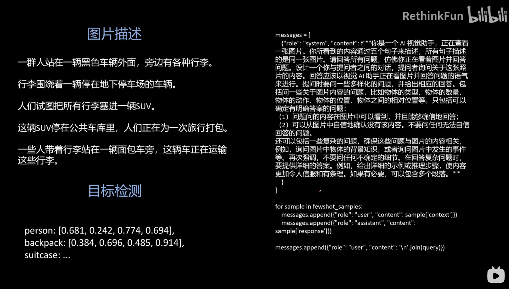
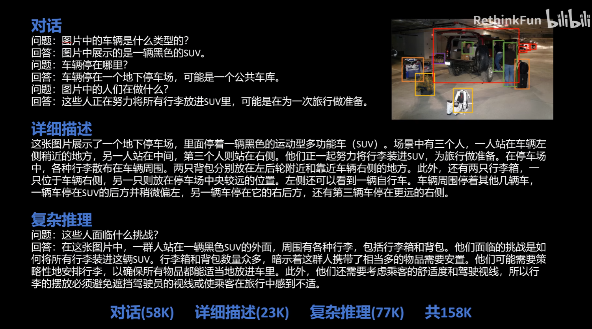
- 最简单的网络结构
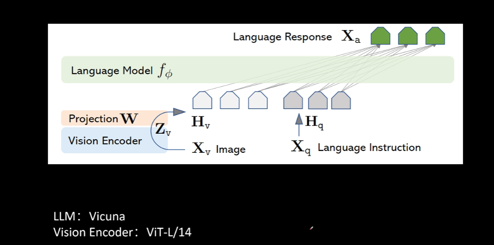
- 两阶段训练
- 特征对齐的预训练
冻结视觉编码器和 LLM，仅训练线性投影层。
CC3M 数据集筛选至 595K 对图像 - 文本对。
简单描述图片问答。
- 端到端微调
冻结视觉编码器，训练线性投影层和 LLM。
GPT4 生成的 158K 视觉指令跟随数据。
# LLaVA 1.5
- 模型结构微改，投影层的一层 MLP 改两层
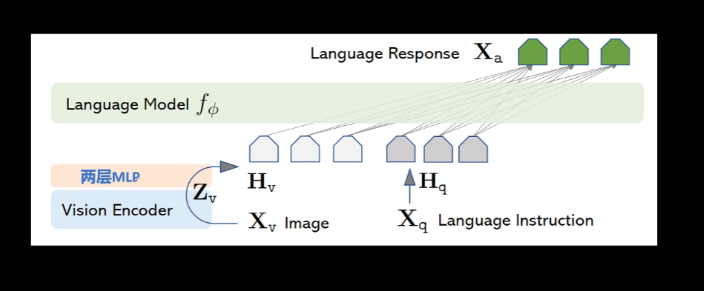
-
使用更多训练数据，训练数据总量从初代的 158K 扩展到了 665K，特别引入了面向学术任务的 VQA 数据（如 VQAv2、GQA 等）；并在不同测试数据集（不同任务）上用不同 prompt
-
提升分辨率
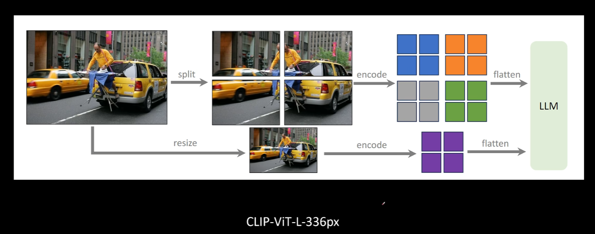
作者的思考：
- 多模态的幻觉问题可以通过提高图片分辨率大大缓解
- 多模态大模型可以组合分项能力，不需要你构建融合各种能力的训练数据
# LLaVA-NeXT
更高图像分辨率，更高质量的用户指令数据，更大的 LLM
分为 7B、13B、34B
# LLaMA 3.2
# 复杂的图片编码器
先建立直觉：只用普通 ViT 的位置编码是不够的。因为 4 个 tile 如果共用同一套 "patch 在 tile 内的位置编码"，那么 Tile0 的 p0 和 Tile3 的 p0 看起来一模一样，模型就分不清 "这块到底是大图的左上还是右下"。所以要分两个层级：
| 编码 | 回答的问题 | 依赖什么 |
|---|---|---|
| Token (patch) 位置编码 | "我是 tile 内部的第几个 patch？" | token 序号 i |
| Tile 位置编码 | "我这个 tile 在大图里排第几（左上 / 右上 /…）？" | tile 序号 t + 布局 id |
而 Tile 位置编码又分 pre（进 Transformer 前） 和 post（出 Transformer 后） 两次加，目的是前后都强化 "块间相对位置" 这个信息。
一个 batch 里：
- 图 A 是 2×2 → 4 个 tile
- 图 B 是 1×2（瘦长图）→ 只有 2 个 tile
但张量必须对齐成同样形状，所以统一 padding 到 max_num_tiles = 4 。图 B 就被补上 2 个全是 0 的假 tile：
图B 真实： [Tile0, Tile1] | |
padding后： [Tile0, Tile1, (pad), (pad)] | |
有效标记： [ 1 , 1 , 0 , 0 ] ← 这就是 aspect_ratio_mask |
注意力是 "跨 tile 全局" 的，为了防止模型 "注意" 那两个 padding 假 tile 的垃圾内容，污染结果。所以要 mask。在 attention 时，把 padding 位置写
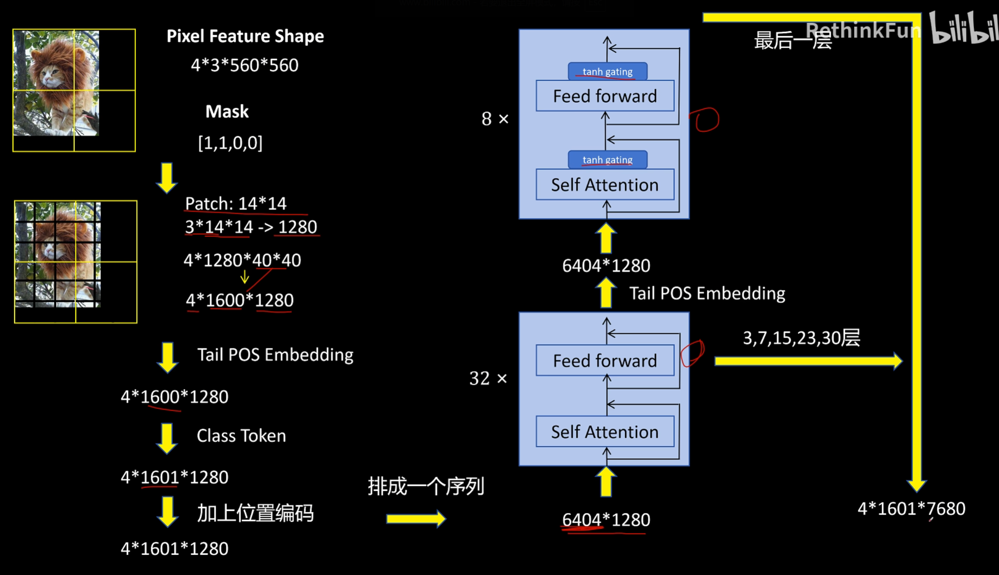
- 进编码器前要加 Tile 位置编码 P（tanh 门控，一个 tile 一个）
- 然后加 cls，然后加 Token（patch） 位置编码（E 和 T，其中 E 只看 token 序号；T 每个 tile、每个 token 位置一套；两者互补门控，系数和为 1）
- 在编码器的 attention 中用 mask 控制注意力位置
- 进局部编码器（32 层的那个）出来的 hidden state，再 tile 位置编码 P（另一个门控），然后进全局编码器（最后 8 层）
# 对齐 & 后续 LLM
-
把视觉特征喂给一个简单的线性投影，然后 cross attention，作为 KV
-
和 Flamingo 一样，每个 token 只能看到上一张图（或者没有图）